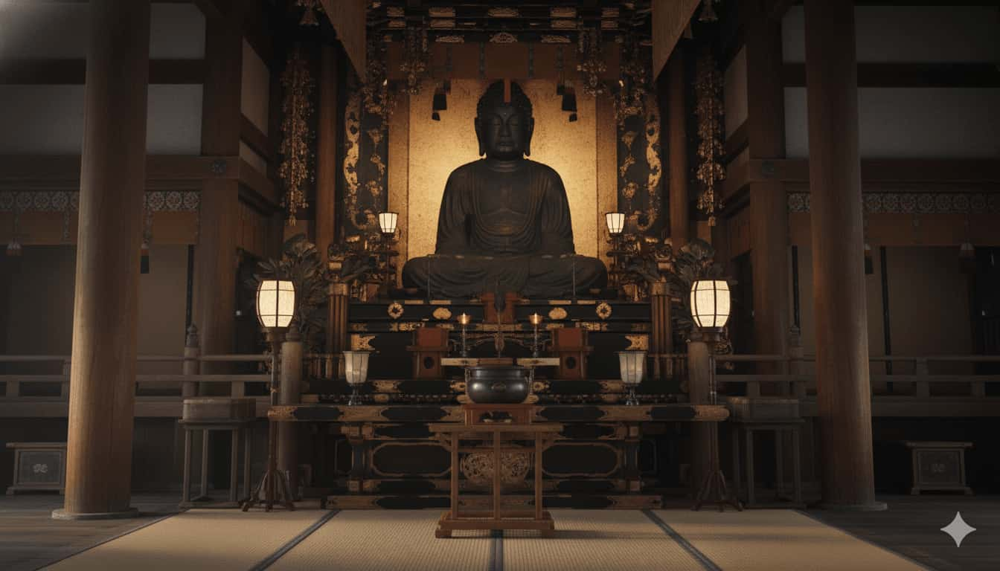

供養の様子
心を込めた閉眼供養
丁寧な供養をお約束します
さくらサービス東京では、ご仏壇・お位牌・ご本尊などの処分に際し、
自社供養場にて正しい作法で閉眼供養（魂抜き）を丁寧におつとめしています。
供養の流れと様子
実際の供養の様子をご紹介します

読経（どきょう）
僧侶による丁寧な読経が行われます。故人様への感謝の気持ちを込めて、厳粛な雰囲気の中で執り行われます。
焼香（しょうこう）
心を込めてお焼香をさせていただきます。香りの良いお線香を使用し、清らかな空間で供養いたします。
法話（ほうわ）
供養の後、ご住職よりありがたいお話をいただきます。命の尊さや感謝の心について改めて考える時間となります。
お焚き上げ（おたきあげ）
浄火によって天に還します。お位牌や過去帳など、燃えるものは丁寧にお焚き上げいたします。（※イメージ）
合掌（がっしょう）
スタッフ一同、感謝の気持ちを込めて合掌します。最後のお見送りを心を込めて行わせていただきます。